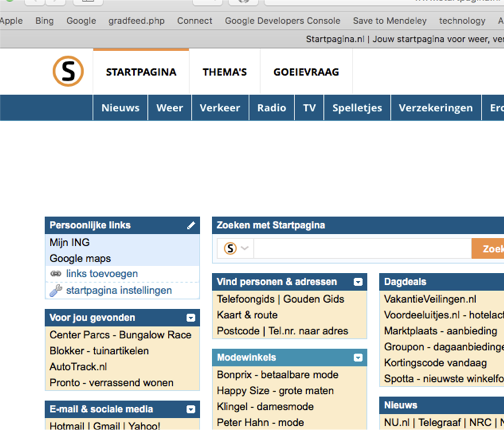
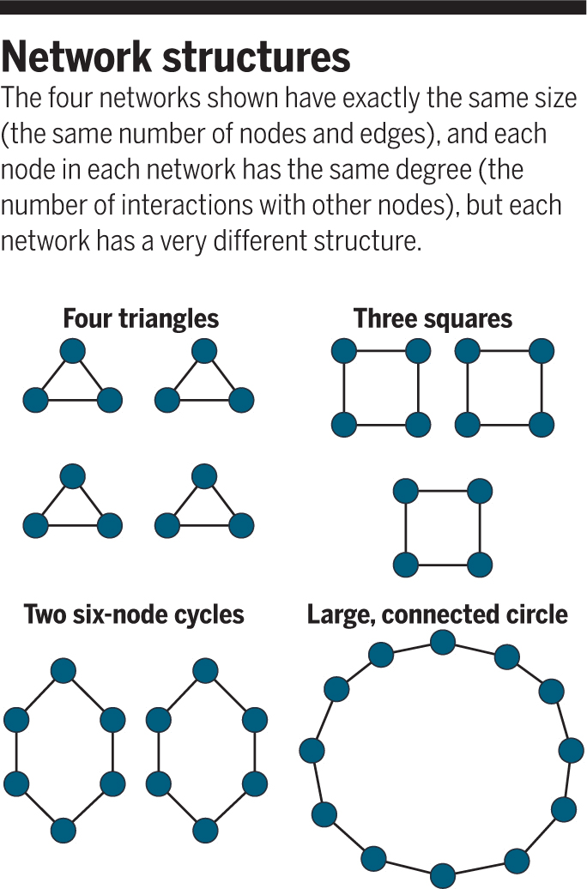
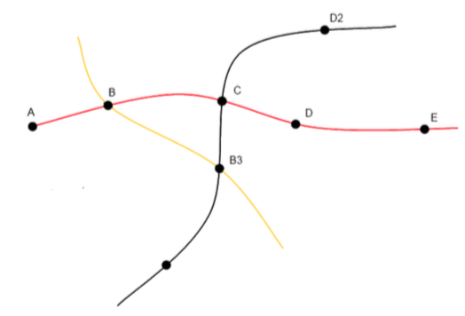
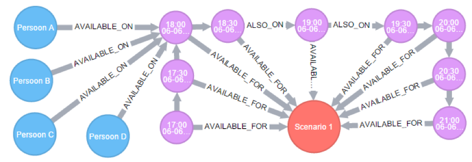
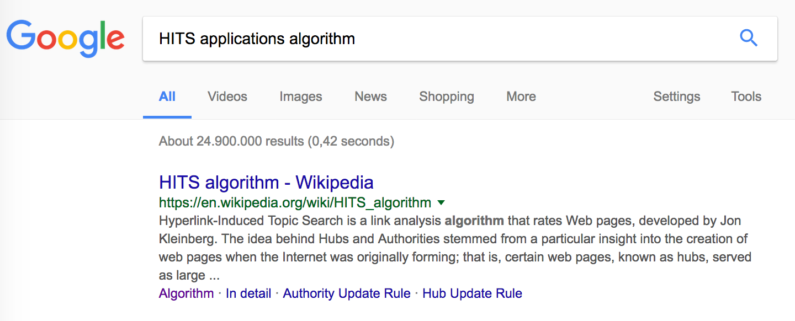

De relevantie van Big Data

Netwerken zijn een bijzonder type van gestructureerde data.
Netwerken representeren vaak juist gigantische datasets.
Bij groei van data naar big data is intelligente analyse een zinvolle oplossing.

Afstudeerproject: maak een routeplanner die ondersteuning biedt voor overstappen.

Afstudeerproject: maak het mogelijk om gezamenlijk een etentje te plannen, een 'intelligente' datumprikker.nl.
Een afspraak is een edge tussen persoon en tijdstip.
Web pages vary greatly in terms of the number of backlinks they have. (...) Generally, highly linked pages are more important than pages with few links. (...) PageRank is an attempt to see how good an approximation to importance can be obtained from just the link structure.
Welk wegdeel is het drukst?
b.socrative.com room ABE1A2CB
| A | B | C | D | E | |
|---|---|---|---|---|---|
| 1 | 0.2 | 0.2 | 0.2 | 0.2 | 0.2 |
| 2 | 0.07 | 0.1 | 0.17 | 0.17 | 0.3 |
| 3 | 0.1 | 0.03 | 0.18 | 0.13 | 0.18 |
| 4 | 0.06 | 0.05 | 0.13 | 0.11 | 0.1 |
| 5 | 0.03 | 0.03 | 0.09 | 0.06 | 0.11 |
| 6 | 0.04 | 0.02 | 0.07 | 0.05 | 0.06 |
| 7 | 0.02 | 0.02 | 0.05 | 0.04 | 0.04 |
| 8 | 0.01 | 0.01 | 0.03 | 0.02 | 0.04 |
| 9 | 0.01 | 0.01 | 0.02 | 0.02 | 0.02 |
| 10 | 0.01 | 0.01 | 0.02 | 0.01 | 0.02 |
| A | B | C | D | E | |
|---|---|---|---|---|---|
| 1 | 0.2 | 0.2 | 0.2 | 0.2 | 0.2 |
| 2 | 0.11 | 0.13 | 0.18 | 0.18 | 0.27 |
| 3 | 0.12 | 0.1 | 0.18 | 0.16 | 0.21 |
| 4 | 0.11 | 0.1 | 0.17 | 0.15 | 0.18 |
| 5 | 0.1 | 0.1 | 0.16 | 0.14 | 0.19 |
| 6 | 0.1 | 0.1 | 0.15 | 0.14 | 0.18 |
| 7 | 0.1 | 0.1 | 0.15 | 0.14 | 0.18 |
| 8 | 0.1 | 0.1 | 0.15 | 0.14 | 0.18 |
| 9 | 0.1 | 0.1 | 0.15 | 0.14 | 0.17 |
| 10 | 0.1 | 0.1 | 0.15 | 0.14 | 0.17 |
| A | B | C | D | E | |
|---|---|---|---|---|---|
| 1 | 0.2 | 0.2 | 0.2 | 0.2 | 0.2 |
| 2 | 0.07 | 0.3 | 0.37 | 0.17 | 0.1 |
| 3 | 0.03 | 0.33 | 0.48 | 0.07 | 0.08 |
| 4 | 0.03 | 0.35 | 0.54 | 0.04 | 0.03 |
| 5 | 0.01 | 0.36 | 0.58 | 0.02 | 0.02 |
| 6 | 0.01 | 0.37 | 0.6 | 0.01 | 0.01 |
| 7 | 0 | 0.37 | 0.61 | 0.01 | 0.01 |
| 8 | 0 | 0.38 | 0.61 | 0 | 0 |
| 9 | 0 | 0.38 | 0.62 | 0 | 0 |
| 10 | 0 | 0.38 | 0.62 | 0 | 0 |
PageRank: een combinatie van de kans dat iemand via de random jump probability op een node uitkomt, en de kans dat iemand via een link op een node uitkomt.
De eerste kans wordt berekend als: kans op random jump X kans op die node.
De tweede kans wordt berekend als (1 - kans op random jump) X PageRank van in-nodes.
| probability: random jump | \[a\] |
| probability: node na random jump | \[\frac{1}{|G|}\] |
| PageRank in-nodes | \[\sum_{m \in L(n)}^{} \frac{P(m)}{C(m)}\] |
| PageRank | HITS |
|---|---|
| Yahoo | |
| Offline | Online |
| Gericht op ranking | Gericht op search |
| PageRank score | HUB score en Authority score |
Sommige pagina’s vooral een rol hebben als doorverwijzers (directories, in HITS: hubs), andere vooral als content-providers (in HITS: authorities).
PageRank wordt toegepast op een geheel netwerk; HITS wordt juist toegepast op een klein deel van een netwerk. Meestal worden eerst relevante nodes geselecteerd voor een zoekopdracht, en worden aan die root set alle nodes toegevoegd die naar de root set verwijzen: base set.
Het algoritme is grofweg (bron: Wikipedia):
Authority Update Rule (node krijgt inkomende Hub-scores).Hub Update Rule (node krijgt uitgaande Authority-scores).Nodes D en C krijgen de meeste verwijzingen / binnenkomend verkeer / ballen aangespeeld.
Nodes E, A, C verwijzen het meeste / verbindingen / ballen doorgespeeld.
HITS wordt praktisch niet vaak meer gebruikt voor WebSearch - PageRank (en collega's) blijken krachtiger te zijn. Maar in sommige domeinen nog wel: bijvoorbeeld voor wijnkenners.
Netwerkstructuren worden steeds belangrijkere datastructuren.
Bijna alle dat soort structuren vallen onder "Big" data
We gaan oefenen met het oefenen van de oer-big data technologie (MapReduce) en dat toepassen op netwerkstructuren.